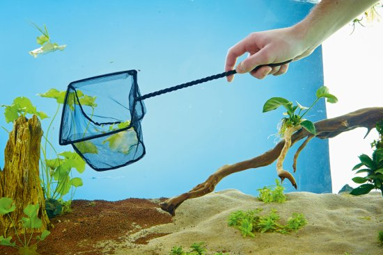

Ostatní potřeby k akváriu
...
- Akvarijní síťka
- Teploměr
- Přípravky na úpravu vody
- Krmivo
Akvarijní síťka: potřebná pomůcka na manipulaci s rybami např. při procesu čištění akvária.
Teploměr: digitální, skleněné, nalepovací (externí), je důležité mít přehled nad teplotou v akváriu, zejména když chováme tropické ryby
Přípravky na úpravu vody: ne vždy jsou nutné, ale jsou velkou pomocí na úpravu ph, snížení chloru, hnojení rostlin nebo na léčení nemocných rybek
Krmení: vločkované, živé, mražené, rostlinné. Musíme se řídit preferencí dané ryby.